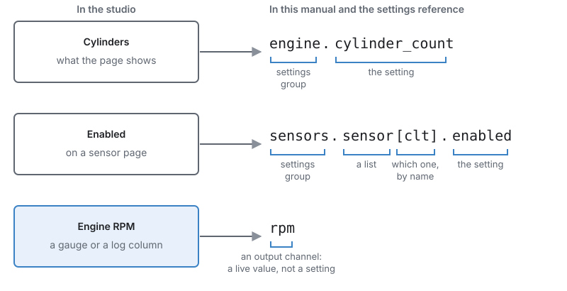
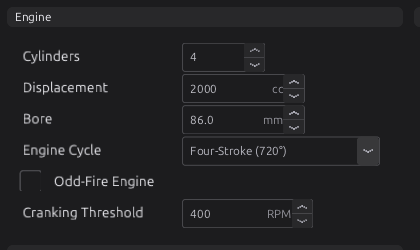

How to use this manual¶
Basic
In one sentence: this chapter tells you how the manual is laid out, what the marks and conventions in it mean, and how to find the one page you need.
Overview¶
Basic
This manual covers the jayecu engine control unit (ECU) and jayecu Studio, the program you use on your computer to set it up, tune it and watch it run. It takes you from wiring a new harness to calibrating a running engine, and it is also the reference you come back to when something does not behave the way you expect.
You can read it two ways:
- Front to back, if you are learning. Each part builds on the one before it, and each chapter says near the top what it expects you to know.
- Dipped into, if you have a question. Every section makes sense on its own, and search finds any setting by its name.
The manual is split into seven parts, in the order you meet them on a real installation:
| Part | What it covers | Start here if… |
|---|---|---|
| I — Getting started | This chapter, the system at a glance, installing the studio, a tour of it, the first connection and a quick-start checklist | you are new to jayecu |
| II — Hardware and wiring | The board and its connectors, tools, wiring practice, power and grounds, sensors, outputs, CAN and the rest of the vehicle | you are building or checking a harness |
| III — Configuring the engine | One chapter per job the ECU does: trigger, sensors, outputs, fuel, ignition, idle, boost, protection and the rest | you are setting up a function |
| IV — Tuning | Principles, then fuel, ignition, auto tune, knock and datalogging on a running engine | the engine runs and you are improving it |
| V — Testing and troubleshooting | Bench testing, trouble codes, and symptom-to-cause guides | something is wrong |
| VI — Firmware and maintenance | Updating firmware, recovering an ECU, files and backups, customising the studio | you are updating or looking after a system |
| VII — Reference | Every setting, every output channel, every trouble code, the trigger wheel library, the Lua API, the glossary | you need an exact fact |
The manual is inside the studio
Help ▸ User Manual (or F1) opens this manual in your web browser, from a copy installed with the studio, so it works with no internet connection.
Concepts¶
Basic
Levels¶
Readers range from someone wiring their first ECU to a professional calibrator. So that each of you can tell what is written for you, every section carries one level mark directly under its heading:
| Mark | Written for | What it assumes |
|---|---|---|
| Basic | Anyone | No knowledge of engine management. Every term is explained the first time it is used. |
| Intermediate | Someone with a running engine | You know what volumetric efficiency (VE), lambda and ignition timing are. |
| Advanced | A calibrator, or someone wiring unusual hardware | You may be assumed to know the rest of the manual. |
A chapter usually starts Basic and ends Advanced. You can stop at the first Advanced section and still have a working setup. The Advanced parts explain the finer points, the edge cases and how to get the last few per cent; they are not steps you must finish.
A range such as Basic → Advanced under a heading means the section starts simple and ends deep.
Callouts¶
Coloured boxes mark text that has a particular job. Each kind means one thing only:
| Box | Means |
|---|---|
| Tip | A better way, a shortcut, or a rule of thumb from experience. |
| Note | Background that helps you understand but that you do not need to follow along. |
| Example | A worked example with real values. |
| Warning | Getting this wrong can cost you time, a part, or a bad tune. |
| Danger | Getting this wrong can damage the engine or hurt someone: fuel, fire, a throttle that will not close, over-boost. |
| Advanced | A deeper aside. If you are reading at Basic level you can skip it. |
Read every Danger box
A Danger box is never decoration. If a section has one, read it before you change anything the section describes.
Names in the studio¶
When the manual names something you will see on screen, it uses the studio's exact words in bold: a menu item (File ▸ Save Tune), a button (Burn), a page (Configuration ▸ Engine Configuration ▸ Cylinders & Firing) or a setting (Cylinders).
The arrow ▸ separates the steps of a path: a menu and its item, or the branches of the navigation tree down to a page. Keys are shown like Ctrl+S.
Your pages may not look exactly like the pictures
The pages, their order and the gauges on them come from a layout file, and you can change a layout (chapter 49). The screenshots in this manual show the layout that ships with the board. If you or your installer have rearranged yours, the settings are the same but they may sit in a different place. The chapter names the page the setting is on; type that page's name into the Filter… box above the navigation tree to find it.
How settings are named¶
Every setting has two names, and this manual uses both.
- The label is what the studio shows on the page: Cylinders, Activation RPM, Stoich AFR. This is the name to look for on screen.
- The path is the setting's exact name inside the ECU's definition, written in
code:engine.cylinder_count. It never changes when a page is rearranged, and it is what the settings reference is sorted by, so it is the name to search for when you need to be certain.
The first time a chapter mentions a setting it gives both, for example Cylinders
engine.cylinder_count. After that it uses the label alone.

rpm is an output channel, not a setting.A path reads from left to right, from the general to the particular:
- The settings group comes first. There is one group per firmware module (
engine,boost,fuel_calculator,sensorsand so on), and each group has its own page in the settings reference. - The setting comes after the dot.
- A list of similar things, such as the sensors, is followed by the member in square brackets.
The member is named, not numbered:
sensors.sensor[clt]is the coolant temperature sensor wherever it sits in the list, so the name never points at the wrong sensor if the list grows.
Output channels are named the same way but are not settings. A channel is a live value the ECU
reports, such as Engine RPM rpm, Manifold Pressure map or Unburned Changes
config_dirty. You watch channels on gauges and record them in logs; you cannot type a value into
one. Every channel is listed in Output channels.

engine.cylinder_count. Hold the pointer over
a setting to see its help text.The help text that appears when you hold the pointer over a setting is the same text printed in the settings reference. Both come from the ECU's definition, so they always describe the firmware you are connected to.
Units¶
The manual gives metric units first, with the other unit in brackets where readers commonly expect it: kPa (psi), °C (°F), mm, ms, degrees, and lambda (AFR).
Three points catch people out:
- Pressures are absolute. A manifold pressure of 100 kPa is roughly atmospheric pressure at sea level, not "100 kPa of boost". 200 kPa absolute is about 100 kPa (1 bar, 14.5 psi) of boost at sea level. Where a setting is a difference between two pressures, its help text says so.
-
Angles are crank degrees. Ignition advance is in degrees before top dead centre (BTDC), and a four-stroke engine cycle is 720°.
-
Mixture is lambda. Lambda 1.00 is the chemically correct (stoichiometric) mixture for whatever fuel you run; below 1 is rich, above 1 is lean. The manual gives AFR in brackets for petrol, where lambda 1.00 is about 14.7:1.
The studio can show many values in the unit you prefer. Edit ▸ Preferences… ▸ Units sets the unit for each kind of quantity: pressure in kPa, bar, psi or Pa; temperature in °C, °F or K; speed, torque, power, time and others. The Metric and Imperial buttons set a whole group at once. Until you choose, each value appears in the unit the ECU's definition gives it. The unit you choose only changes how a value is shown and typed; the ECU always stores the same number.
Metric sets pressure to kPa, the unit this manual uses; Imperial sets it to psi. If you prefer bar, choose it under Pressure and divide the manual's figures by 100.
Figures and numbers¶
Figures are numbered by chapter: Figure 24.3 is the third figure in chapter 24. Every figure has a caption that tells you what to look at.
Screenshots in this manual are made by the studio itself, from a demonstration tune, with the function being described switched on and set to the chapter's example values. The values you see are examples, not recommendations for your engine.
Defaults, ranges and units are never typed in by hand. The settings tables at the end of each chapter and in Part VII are generated from the same definition the studio loads, so they match the firmware. If a number in the text ever disagrees with the settings table, trust the table, and please report the difference.
Procedure: finding what you need¶
Basic
- Know the name on screen? Type it into the search box at the top of this page. Search matches
words in headings, text and the settings tables, so a label such as Activation MAP or a path such
as
boost.activation_kpaboth find the right place. - Know the job, not the name? Open the part that covers it (see the table under Overview) and pick the chapter from the index on the left. Part III has one chapter per function the ECU performs.
- Need the exact range, default or units of a setting? Go to Every setting, by module, open the group (the part of the path before the first dot) and find the path.
- Have a symptom? Start at the troubleshooting table at the end of the chapter for that function, or at the Troubleshooting guide if you do not know which function is at fault. A trouble code such as P1710 is listed in Trouble codes.
- Meet a word you do not know? Look it up in the Glossary.
Reading a settings table¶
Every chapter about a function ends with its settings table, and Part VII has all of them. Each row gives the label in bold, the path, the range, the default, the units if any, and the help text the studio shows. This is the one for the Engine group:
| Setting | What it does |
|---|---|
Cylindersengine.cylinder_countRange: 1 to 12 Default: 4 |
How many cylinders the engine has. It sizes almost everything downstream — the per-cylinder tables, the trim scopes, the misfire codes — so it is one of the first things to get right and one of the worst to get wrong quietly. |
Boreengine.bore_mmRange: 0.0 to 200.0 Default: 0.0 Units: mm |
Cylinder bore. Used for the knock band: with Knock Frequency at 0 the band centre is derived from it (900 / (pi x bore/2) kHz — about 6.7 kHz for an 86 mm bore), because the ringing frequency of a knocking cylinder follows its bore. 0 = not entered, and the knock band then sits at a generic 7 kHz. |
Displacementengine.displacementRange: 1 to 30000 Default: 2000 Units: cc |
Total engine swept volume. The speed-density air model uses it — per-cylinder swept volume = displacement / cylinders. |
Engine Cycleengine.cycle_typeRange: one of: Two-Stroke (360°), Four-Stroke (720°), Rotary (1080°) Default: Four-Stroke (720°) |
How many crank degrees one complete engine cycle takes, which is the span every angle in the tune is expressed in. FOUR-STROKE is 720°, TWO-STROKE 360°, ROTARY 1080°. It also sets the default repeat rate for a crank-mounted trigger stream, so changing it moves the trigger decode as well as the scheduling. |
Ignition Modeengine.ign_modeRange: one of: Single Coil (distributor), Wasted Spark, Coil-on-Plug Default: Wasted Spark |
How the COILS are wired. The studio lays out the coil outputs from it (IGN1 = cylinder 1 and so on) whenever it changes; the pin pages are where they are then read or changed. WASTED SPARK: each coil output names ONE cylinder and also fires that cylinder's companion — the cylinder half an engine cycle away, taken from the firing order at run time, so a changed firing order never moves an output. It needs only crank sync. COIL-ON-PLUG needs cam PHASE sync to fire sequentially (before phase it fires companion pairs together). DISTRIBUTOR is one coil for every cylinder. A rotary's trailing plug comes from the engine cycle, not from here. |
Odd-Fire Engineengine.odd_fireRange: 0 to 0 Default: 0 |
Even-fire (0): every cylinder's TDC is COMPUTED from the firing order — position × cycle / cylinders — and the ECU writes it back into each cylinder's tdc_angle (studio shows the computed angle greyed out). Odd-fire (1): the engine does NOT fire at even intervals, so each cylinder's tdc_angle is directly editable instead. Injection mode and squirt count are NOT here — they are per injection stage (see inj_stage). |
Number of Injection Stagesengine.num_inj_stagesRange: 1 to 4 Default: 1 |
How many injection stages are active. Only inj_stage[0 .. num_inj_stages-1] are built and claimed; higher entries are ignored whatever they hold. Stage 1 is the primary; a second stage is the staged secondary; 3 and 4 are further stages. |
Injector Timing Methodengine.injector_timing_methodRange: one of: End of Injection, Start of Injection Default: End of Injection |
What the injection firing angle refers to (injector timing method). END OF INJECTION (default): the angle is where the pulse CLOSES, so the firmware opens the injector a pulse-width of angle earlier so it finishes on the set angle — the fuel lands at a fixed point regardless of how long the pulse is. START OF INJECTION: the angle is where the pulse OPENS, and it closes a pulse-width later. End is the common choice because it keeps the delivered charge's end point steady as pulse width grows with load. |
Cranking Thresholdengine.cranking_rpmRange: 100 to 2000 Default: 400 Units: RPM |
CRANKING->RUNNING. Above this RPM the engine has caught and is running (anchors post-start). |
Ignition Outputsengine.ign_enableRange: one of: Off, On Default: On |
Off stops every coil firing, the same way a rev limiter's spark cut does. For cranking with no spark — checking fuel delivery, or clearing a flooded engine. It SURVIVES A RESET, so an engine that cranks and will not start is worth checking here first. |
Injector Outputsengine.inj_enableRange: one of: Off, On Default: On |
Off stops every injector opening, the same way an overrun fuel cut does. For cranking with no fuel — checking for spark, or building oil pressure on a fresh engine. It SURVIVES A RESET, so an engine that cranks and will not start is worth checking here first. |
Examples¶
Intermediate
Example 1 — \"What does Activation MAP do?\"
You have seen Activation MAP on the boost page and want to know what it does.
- Search for Activation MAP. The first result is chapter 24, Boost, section Activation: when the module acts at all. It explains the setting in context: boost control acts only when engine speed and manifold pressure are both above their activation values.
- For the exact default and range, open the settings table at the end of chapter 24 (or
Every setting, by module ▸ Boost) and find the row for
boost.activation_kpa.
Example 2 — a warning on a new ECU
The studio shows a trouble code you have not seen before.
- Look the code up in Trouble codes. The entry says which function raised it.
- Go to that function's chapter in Part III and read its Diagnostics section: what sets the code and what to check.
- If that does not settle it, use the chapter's Troubleshooting table, then chapter 44.
Pitfalls¶
Basic
| Problem | Why it happens | What to do |
|---|---|---|
| A setting in the manual is not on your page | Your layout has been rearranged, or the page only appears once its function is switched on | Type the page name the chapter gives into the Filter… box above the navigation tree; switch the function on first |
| A pressure is far off what the manual says | The studio is showing bar or psi (see Units), or you are reading gauge pressure against the manual's absolute pressure | Check Edit ▸ Preferences… ▸ Units; remember that about 100 kPa is atmospheric |
| The manual describes a setting your studio does not have | Your ECU runs different firmware from the one this copy of the manual was built for | Use Help ▸ User Manual in the studio that came with your firmware, or update (chapter 46) |
| You copied the example values and the engine runs badly | Examples are starting points for a particular engine, not your engine | Read the chapter's Tuning it section and log before and after each change |
Related¶
- Chapter 2 — The system at a glance: the parts of the system and how they connect
- Chapter 3 — Installing jayecu Studio
- Chapter 4 — A tour of the studio
- Every setting, by module and the Glossary